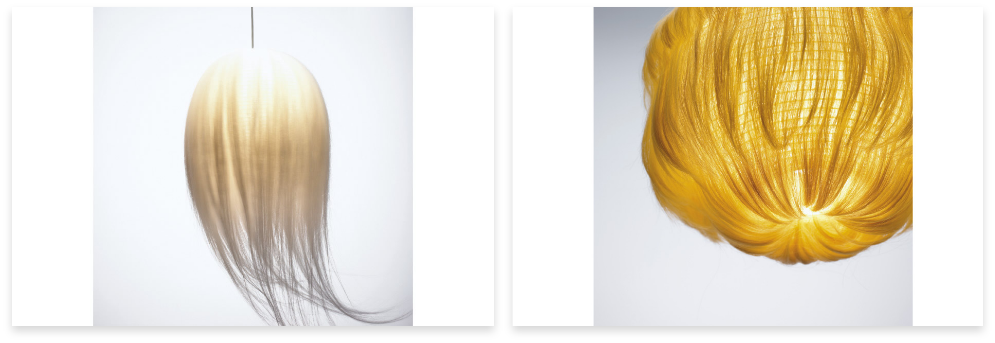
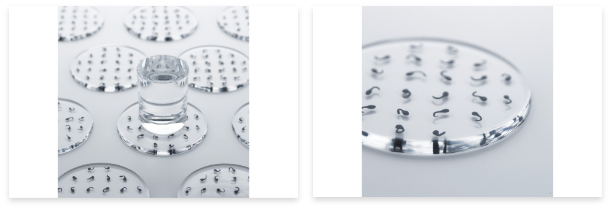
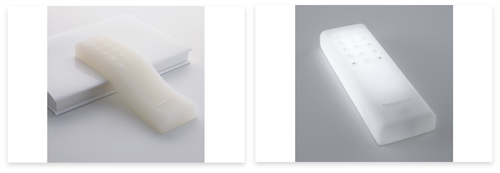
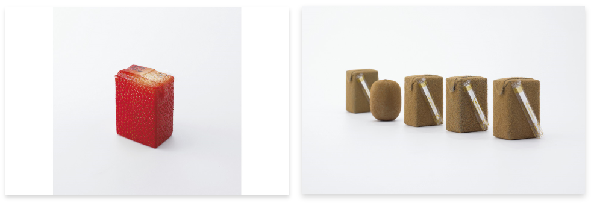

HAPTIC
HAPTIC는 "촉각적인 "혹은"촉각을 반기는 "이란 뜻이다.2004년에 개최한 이 전시회에서는 "오감의 각성"을 제일의 동기로
디자인을 하도록, 22명의 건축가나 디자이너, 미장이사, 하이테크 가전 메이커 등에 의뢰하고 HAPTIC일용품을 디자인했다.
테크놀로지가 사회와 경제를 견인하는 상태가 계속된 지 오래다.그 상태를 "테크놀로지·피동"으로 알려졌다.그러나 감각의
희구를 기점으로 한 것을 만든다는 방식도 제 과학의 진보와 동시에 진화해도 될 것이다."센스 피동"라고 할 세계의 진화가
거기에 상상할 것이다.뛰어난 크리에이터의 참여로 HAPTIC은 순식간에 구체적으로 밝혀졌다.
KAMI TAMA
D: 津村耕佑 (Kosuke Tsumura)
MEDIUM: Washi paper,silk hairs
TECHNOLOGY: Lanterns and hair implants
オタマジャクシコースター
D: 祖父江慎 (Shin Sobue)
MEDIUM: Transpalent liquid silicone rubber,a vinyl-type plastic clay
ジェルリモコン
D: パナソニックデザイン社 (Panasonic Design Company)
MEDIUM: Gel
ジュースの皮
D: 深澤直人 (Naoto Fukasawa)
MEDIUM : Non rigid plastic
TECHNOLOGY: Electrostatic flocking,Technology for playfood production
五感の覚醒
HAPTIC - 오감의 각성(BOOK)
"HAPTIC"전은 사람의 감각을 발단으로 한 제조를 의식화하는 시도이다.
것을 만들 때에, 색, 모양, 텍스처의 균형 같은 외적인 요인이 없이,
얼마나 느끼느냐는 "느낌"의 관점을 중심으로 둔다면 어떤 새로운
디자인이 생기겠느냐.바로 감각의 세계 지도를 넓히려는 야심적인
접근의 성과를 정리한 서적이다."